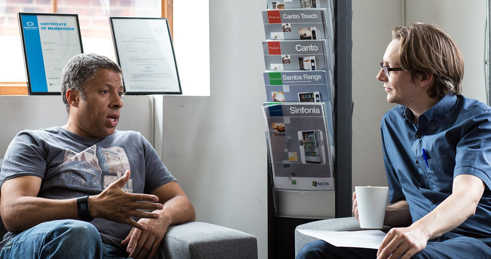
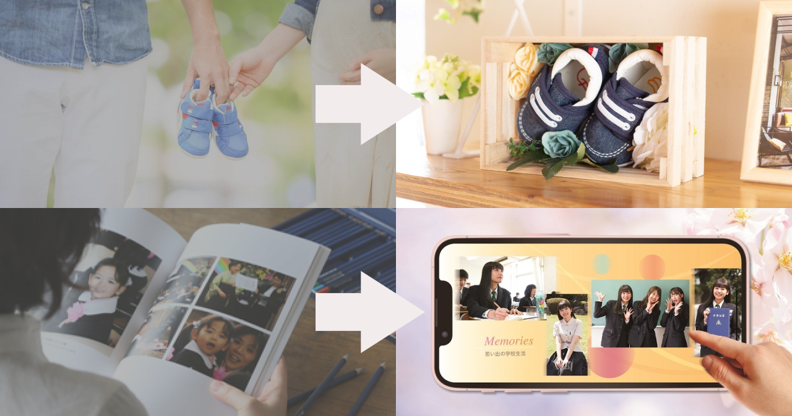

新しい思い出の残し方・活かし方を追求
「思い出」といっても、ずっと残しておきたい子供のファーストシューズから、ある程度整理して残しておきたい沢山の写真まで色々ありますが、インテリアとして飾る方法からリメイクしてコンパクトにする方法、データ化して見返せる方法まで様々な方法・サービスがあり全てを把握することは困難です。
そこで多彩な整理方法を熟知した私たちが、お客様から思い出についてじっくりヒアリングさせて頂きながら、思い出の残し方、整理の仕方をご提案を通して一緒に考えさせて頂きます。
子供が独立して、これからは夫婦二人の新たな生活が始まる。
車も手放して、駅近でコンパクトな生活を想像したりもするけれど、大切な子ども達との思い出の品がたくさんあってなかなか次の一歩が踏み出せない。
そんな大切な思い出が物理的・心理的な重い手になってしまった皆さんに寄り添い、想い出というかたちにかえることで、背中の後押しが出来ないかと言う思いから
私たちは「想い出プロデュース」を立ち上げました。
「思い出」といっても、ずっと残しておきたい子供のファーストシューズから、ある程度整理して残しておきたい沢山の写真まで色々ありますが、インテリアとして飾る方法からリメイクしてコンパクトにする方法、データ化して見返せる方法まで様々な方法・サービスがあり全てを把握することは困難です。
そこで多彩な整理方法を熟知した私たちが、お客様から思い出についてじっくりヒアリングさせて頂きながら、思い出の残し方、整理の仕方をご提案を通して一緒に考えさせて頂きます。
家族５人で暮らしたお家にから、お子さん達が巣立たれ夫婦２人で20年暮らされていました。
お子さん達のためにも自分の見の回りを整理して、よりミニマルな生活を始めようと思われていました。
ただ、お子さんとの思い出の品や家族で残してきた写真などがたくさんあり、どうすればいいか分からず立ち止まってしまっていました。

物が多くてミニマルな暮らしを実現できない、というお悩みは「思い出があるものを手放すのは忍びない」というものでした。
そこで、大切な物を残し、悩んでしまうものをコンパクトにリメイクされた思い出に変えることで新しい思い出とするというプロデュースが最適という結論にたどり着きました。

どうしても捨てられないけど収納してあるだけの「ファーストシューズ」を壁に飾れるようなインテリアへとリメイクし、20年分のフォトアルバムを簡単に見返せるデジタルアルバムにするプロデュースをさせていただきました。
物の仕分けがスムーズになり、形を変えても思いはそのままな品とともに充実のセカンドライフが送れそうです。